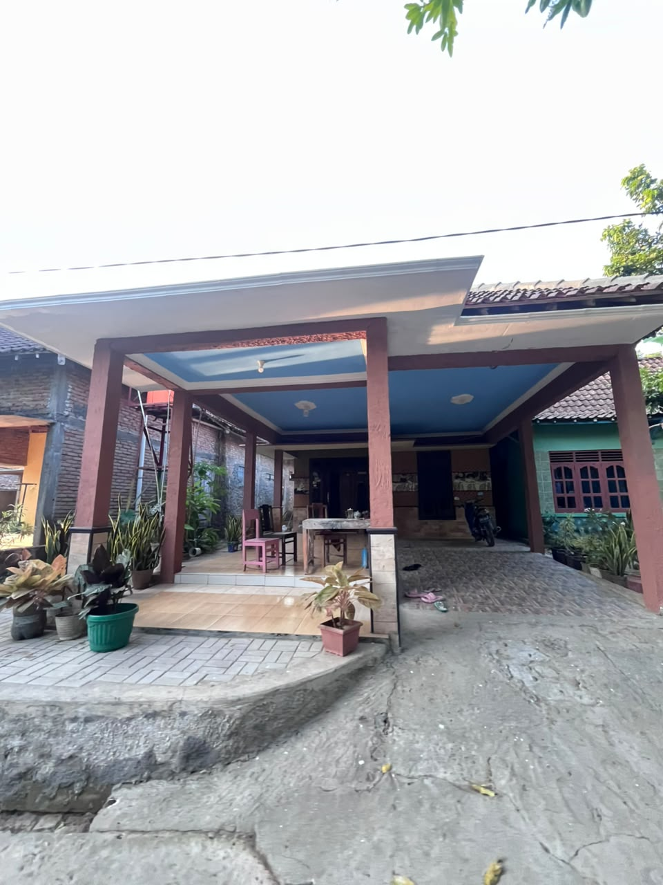
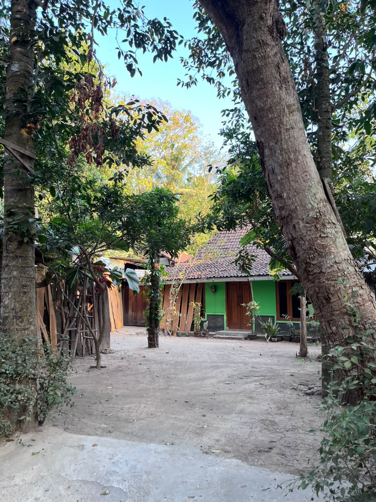

Letak Geografis
Berada di wilayah perbukitan dengan persawahan yang subur, iklim tropis yang sejuk dan udara bersih.
Temukan cerita, potensi, budaya, dan kehidupan masyarakat Dusun Dogongan di Kalurahan Sriharjo, Imogiri, Bantul.

Dusun Dogongan merupakan salah satu padukuhan di Kalurahan Sriharjo, Kapanewon Imogiri, Kabupaten Bantul, Daerah Istimewa Yogyakarta. Lingkungan ini memiliki keragaman luar biasa dalam potensi alam maupun budaya masyarakatnya.
Masyarakat Dogongan hidup harmonis dengan lingkungan, menjalankan tradisi pertanian, kegiatan sosial, dan berbagai kearifan lokal yang masih dipertahankan hingga saat ini.
Nilai gotong royong, keagamaan, serta kekeluargaan menjadi pilar utama dalam kehidupan bermasyarakat di dusun ini.
Keindahan alam, potensi UMKM, dan keramahan warganya menjadikan Dogongan sebagai tempat yang nyaman untuk dihuni sekaligus menarik untuk dikembangkan potensinya.
Jiwa Penduduk
Rukun Tetangga
Luas Sriharjo
Jiwa se-Sriharjo
KK se-Sriharjo
Padukuhan di Sriharjo
Desa Sriharjo merupakan pertemuan dua sungai besar, yaitu Sungai Oya dan Sungai Opak, yang menjadi sumber irigasi utama pertanian. Dogongan terletak di wilayah perbukitan dengan pemandangan persawahan yang memukau dan iklim tropis yang sejuk.
📌 Koordinat Geografis
110.3964° BT — 7.94892° LS
Ke Kecamatan
3 km
Ke Kota
17 km
Ke Kabupaten
10 km
Utara
Desa Kebonagung & Desa Mangunan (Dlingo)
Selatan
Desa Selopamioro, Imogiri
Timur
Desa Mangunan, Imogiri
Barat
Desa Srihardono, Pundong
Dogongan dikelilingi oleh area persawahan yang subur dan perbukitan hijau, menjadikannya salah satu kawasan dengan udara terbersih dan pemandangan alam yang paling asri di Sriharjo.
Dusun Dogongan merupakan salah satu padukuhan di Kalurahan Sriharjo, Kapanewon Imogiri, Kabupaten Bantul. Wilayah ini terbagi menjadi tiga Rukun Tetangga (RT), yaitu RT 01, RT 02, dan RT 03 yang bersama-sama menjadi bagian penting dalam kehidupan masyarakat Dogongan.
Berbagai aspek yang membentuk kehidupan masyarakat di wilayah Dogongan.
Berada di wilayah perbukitan dengan persawahan yang subur, iklim tropis yang sejuk dan udara bersih.
Mayoritas warga bekerja sebagai pedagang dan petani, memanfaatkan lahan pertanian yang tersedia.
Masjid Jamiatul Muslimin menjadi pusat kegiatan keagamaan warga, termasuk TPA bagi anak-anak.
Terdapat Gedung PAUD sebagai pusat pendidikan anak usia dini dan kegiatan ibu-ibu PKK.
Posyandu balita aktif, kelas ibu hamil, dan senam rutin PKK setiap hari Selasa pukul 16.00.
Produksi tahu, tempe, wayang kulit, mebel, dan kuliner menjadi bagian dari kegiatan ekonomi warga.
Mengenal gambaran wilayah, aktivitas, dan peran masing-masing Rukun Tetangga dalam kehidupan masyarakat Dogongan.
Bagian dari Kehidupan Dogongan
Pembangunan infrastruktur jalan lingkungan dan potensi lokal.
Gotong royong, kegiatan sosial, pengelolaan lingkungan dan UMKM.
Tumbuh Bersama Masyarakat
Penataan lingkungan dan infrastruktur pendukung mobilitas warga.
Kegiatan sosial, keagamaan, kepedulian lingkungan dan olahraga bersama.
Ruang Hidup dan Kebersamaan
Peningkatan fasilitas publik dan akses jalan lingkungan yang merata.
Aktif dalam edukasi pengelolaan sampah dan penghijauan lingkungan dusun.
Dogongan dibangun dari kebersamaan. Tiga RT menjadi bagian dari kehidupan masyarakat yang saling terhubung dalam menjaga lingkungan dan mengembangkan potensi dusun.
Dogongan memiliki sejarah panjang dan kearifan lokal yang kuat sebagai bagian dari wilayah yang kemudian menjadi Kalurahan Sriharjo.
Dogongan awalnya merupakan wilayah tersendiri dengan tata kehidupan masyarakat yang erat.
Dogongan, Mojohuro, dan Kedungmiri menyatukan diri membentuk pemerintahan terpadu.
Penggabungan wilayah melahirkan Sriharjo yang melambangkan kemakmuran dan kesejahteraan.
Warga konsisten merawat warisan budaya dan berinovasi dalam pemberdayaan masyarakat.
Pemuda Bergerak, Dogongan Bertumbuh.
Karang Taruna Dwi Tunggal merupakan wadah bagi generasi muda Dusun Dogongan untuk membangun kebersamaan, mengembangkan kreativitas, serta berkontribusi dalam berbagai kegiatan sosial dan kemasyarakatan.
Dari gotong royong rutin, olahraga bersama, hingga penyelenggaraan acara dusun—semua menjadi wujud nyata peran pemuda dalam mendukung perkembangan Dusun Dogongan.
Berbagai bentuk keterlibatan pemuda dalam kehidupan sosial dan kemasyarakatan Dusun Dogongan.
Kegiatan bersama untuk menjaga lingkungan, mempererat hubungan antarwarga, serta menumbuhkan kepedulian terhadap dusun.
Aktivitas olahraga menjadi salah satu ruang bagi pemuda untuk membangun kebersamaan dan menjalin interaksi sosial.
Keterlibatan pemuda dalam penyelenggaraan berbagai acara dusun sebagai bagian dari kehidupan sosial masyarakat.
Salah satu dokumentasi kegiatan masyarakat Padukuhan Dogongan di tingkat Kalurahan Sriharjo.
Dalam Festival Takbir Keliling Hari Raya Idul Adha 1439 H yang diselenggarakan di Kalurahan Sriharjo, kontingen Dogongan berhasil meraih kategori Peserta Terkreatif. Kegiatan ini menjadi salah satu dokumentasi partisipasi masyarakat Dogongan dalam kegiatan tingkat kalurahan.
Baca dokumentasi resmi Kalurahan SriharjoPemerintah Kalurahan Sriharjo melalui Karang Taruna Sedyo Bhakti pernah menyelenggarakan pelatihan kepemudaan bertema "Pemuda Progresif Membangun Desa" pada 26 Mei 2023. Kegiatan tersebut membahas kepemimpinan dan desa wisata serta melibatkan unsur pemuda dan unit karang taruna padukuhan.
Lihat berita kegiatanMengenal kehidupan masyarakat, potensi lokal, serta berbagai kegiatan yang menjadi bagian dari Padukuhan Dogongan.
Dogongan merupakan salah satu padukuhan di Kalurahan Sriharjo, Kapanewon Imogiri, Kabupaten Bantul. Di dalamnya, kehidupan masyarakat tumbuh melalui hubungan sosial, aktivitas sehari-hari, dan kebersamaan antarwarga.
Setiap sudut dusun menyimpan cerita tersendiri. Mulai dari aktivitas keluarga, kegiatan lingkungan, hingga usaha masyarakat yang menjadi bagian dari kehidupan ekonomi lokal.
Kehidupan sebuah dusun tidak hanya terlihat dari wilayahnya, tetapi juga dari masyarakat yang menjaga dan menghidupkannya.
Berbagai usaha masyarakat menjadi bagian dari potensi ekonomi lokal Dogongan.
Produksi tempe merupakan salah satu kegiatan usaha mikro masyarakat yang tercatat di wilayah ini.
Produksi tahu merupakan salah satu kegiatan usaha mikro masyarakat yang tercatat di wilayah ini.
Keterampilan tatah sungging wayang tercatat sebagai salah satu potensi usaha mikro Dogongan.
Usaha produksi batu nisan serta Produksi Mabel juga tercantum dalam data potensi usaha mikro Dogongan.
Jenis usaha di atas merujuk pada dokumen RKP Kalurahan Sriharjo Tahun 2023. Daftar tersebut merupakan data yang tercatat dalam dokumen, bukan konfirmasi kondisi seluruh usaha saat ini.
Lihat dokumen RKP Kalurahan Sriharjo ↗Kegiatan lingkungan dan interaksi masyarakat menjadi bagian dari dinamika kehidupan Dogongan.
Salah satu contoh kegiatan bersama masyarakat tercatat dalam pembangunan gudang perkakas dan pos kamling di Padukuhan Dogongan pada tahun 2020.
Kegiatan bersama untuk menjaga lingkungan dan mendukung kebutuhan fasilitas dusun.
Keberadaan pos kamling menjadi salah satu bentuk fasilitas pendukung keamanan warga.
Ruang kegiatan belajar dan keagamaan bagi anak-anak di lingkungan dusun.
Berbagai aktivitas bersama yang menjadi ruang interaksi dan kebersamaan warga.
Jembatan Dogongan diresmikan pada 27 Desember 2023. Pembangunan ini ditujukan untuk mendukung konektivitas dan mempermudah mobilitas masyarakat di sekitarnya.
Baca informasi dari Kalurahan Sriharjo ↗Beberapa kategori kegiatan di atas merupakan gambaran aktivitas yang dapat ditampilkan melalui dokumentasi warga. Tambahkan foto kegiatan asli Dogongan untuk melengkapi informasi pada bagian ini.
Kenali produk dan usaha lokal yang tumbuh dari tangan masyarakat Dogongan.
Pilih kategori untuk melihat berbagai produk lokal.
 Tahu
Tahu
Beragam usaha rumahan yang memproduksi tahu berkualitas dari kedelai pilihan warga.
 Tahu
Tahu
Proses pembuatan tahu yang bersih dan higienis oleh masyarakat Dogongan.
 Tempe
Tempe
Tempe tradisional dengan cita rasa khas hasil fermentasi alami, diproduksi setiap hari.
 Tempe
Tempe
Pengolahan kedelai terbaik menjadi tempe yang kaya akan nutrisi dan protein.

KerajinanPembuatan kerajinan wayang dengan ukiran mendetail dan bernilai seni tinggi oleh pengrajin lokal.

FurniturePembuatan perabotan mebel kayu yang presisi, kuat, dan tahan lama oleh ahli kayu Dogongan.
Membangun kesadaran dan ketangguhan masyarakat Dusun Dogongan.
Dusun Dogongan memiliki potensi risiko bencana hidrometeorologi, terutama banjir dan tanah longsor.
Wilayah Dogongan termasuk salah satu padukuhan di Kalurahan Sriharjo yang pernah terdampak banjir dan tanah longsor. Dalam catatan Pemerintah Kalurahan Sriharjo, hujan dengan intensitas tinggi disertai luapan Sungai Oya dan aliran dari kawasan perbukitan pernah menyebabkan banjir dan tanah longsor yang berdampak pada beberapa padukuhan, termasuk Dogongan.
Mengenali beberapa jenis ancaman yang perlu diperhatikan di lingkungan sekitar.
Dogongan memiliki potensi terdampak banjir, terutama ketika terjadi hujan dengan intensitas tinggi dan peningkatan debit Sungai Oya. Riwayat kejadian banjir di Sriharjo menunjukkan bahwa Dogongan pernah menjadi salah satu wilayah yang terdampak.
Cuaca ekstrem seperti hujan lebat dan angin kencang dapat meningkatkan risiko bencana hidrometeorologi (pohon tumbang, erosi).
Risiko kebakaran tetap perlu menjadi perhatian, terutama yang berkaitan dengan listrik, memasak, dan pembakaran sampah.
Hujan dengan intensitas tinggi menyebabkan luapan Sungai Oya dan aliran dari perbukitan. Dogongan termasuk salah satu padukuhan yang terdampak.
Ketika debit Sungai Oya meningkat, warga dari beberapa dusun termasuk Dogongan melakukan evakuasi ke tempat yang lebih aman.
Risiko bencana dapat dikurangi melalui pengetahuan, kesiapsiagaan, komunikasi, dan gotong royong masyarakat.
Kenali kondisi lingkungan, titik rawan, jalur evakuasi, dan tempat aman di sekitar.
Siapkan informasi kontak darurat, perlengkapan penting, dan rencana evakuasi keluarga.
Bangun komunikasi dan gotong royong antarwarga ketika terjadi kondisi darurat.
Kalurahan Sriharjo telah memiliki status Kalurahan Tangguh Bencana (Kaltana). Upaya kesiapsiagaan dilakukan melalui kerja sama pemerintah kalurahan, FPRB, relawan, masyarakat, dan pihak terkait.
Pada 2025, BPBD Kabupaten Bantul bersama WFP Indonesia melakukan survei di Sriharjo terkait sejarah dan potensi banjir, dampak bencana, serta tindakan masyarakat dan pemerintah kalurahan dalam merespons peringatan dini.
Mengetahui potensi bencana bukan berarti menakut-nakuti. Justru dengan memahami lingkungan, masyarakat dapat lebih siap melindungi diri, keluarga, dan sesama.
Kunjungi Dusun Dogongan dan rasakan keramahan warga serta keindahan alam Sriharjo.
Website ini merupakan bagian dari program kerja Kuliah Kerja Nyata (KKN) Persyarikatan Muhammadiyah 2026 Kelompok 112 yang bertujuan memperkenalkan profil, potensi, budaya, kegiatan, serta kehidupan masyarakat Padukuhan Dogongan melalui media digital.
Website ini dikembangkan sebagai salah satu bentuk kontribusi mahasiswa melalui program Kuliah Kerja Nyata (KKN) Persyarikatan Muhammadiyah 2026 dalam mendukung pengenalan potensi dan informasi wilayah Padukuhan Dogongan.
Pengembangan website ini merupakan bagian dari kontribusi Kelompok 112 bersama masyarakat Padukuhan Dogongan dan Pemerintah Kalurahan Sriharjo dalam mendokumentasikan informasi wilayah, kegiatan masyarakat, serta potensi lokal.
Menjadi media informasi digital yang memuat profil wilayah, kondisi masyarakat, potensi UMKM, budaya lokal, dokumentasi kegiatan, serta informasi lainnya mengenai Padukuhan Dogongan.
📍 Padukuhan Dogongan | 🏡 Kalurahan Sriharjo | 🗺️ Kapanewon Imogiri | 📌 Kabupaten Bantul, D.I. Yogyakarta
Setiap sudut memiliki cerita. Setiap warga memiliki peran. Dan setiap potensi memiliki kesempatan untuk berkembang.
Jelajahi Dogongan